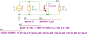

"CSstageModel"
.source I1
.detector V_out
.param W=10u L=180n ID=100u R_L=10k R_s=10G
.model myNMOS M gm={g_m} cgs={c_gs} cgb={c_gb} cdg={c_dg} cdb={c_db} go={g_o}
I1 0 1 I value=0 noise=0 dc=0 dcvar=0
M1 out 1 0 0 myNMOS
R1 1 0 R value={R_s} noisetemp=0 noiseflow=0 dcvar=0 dcvarlot=0
R2 out 0 R value={R_L} noisetemp=0 noiseflow=0 dcvar=0 dcvarlot=0
.end
| RefDes | Nodes | Refs | Model | Param | Symbolic | Numeric |
|---|---|---|---|---|---|---|
| Cdb_M1 | out 0 | C | value | $c_{db}$ | $c_{db}$ | |
| vinit | $0$ | $0$ | ||||
| Cdg_M1 | out 1 | C | value | $c_{dg}$ | $c_{dg}$ | |
| vinit | $0$ | $0$ | ||||
| Cgb_M1 | 1 0 | C | value | $c_{gb}$ | $c_{gb}$ | |
| vinit | $0$ | $0$ | ||||
| Cgs_M1 | 1 0 | C | value | $c_{gs}$ | $c_{gs}$ | |
| vinit | $0$ | $0$ | ||||
| Csb_M1 | 0 0 | C | value | $0$ | $0$ | |
| vinit | $0$ | $0$ | ||||
| Gb_M1 | out 0 0 0 | g | value | $0$ | $0$ | |
| Gm_M1 | out 0 1 0 | g | value | $g_{m}$ | $g_{m}$ | |
| Go_M1 | out 0 out 0 | g | value | $g_{o}$ | $g_{o}$ | |
| I1 | 0 1 | I | value | $0$ | $0$ | |
| noise | $0$ | $0$ | ||||
| dc | $0$ | $0$ | ||||
| dcvar | $0$ | $0$ | ||||
| R1 | 1 0 | R | value | $R_{s}$ | $1.0 \cdot 10^{10}$ | |
| noisetemp | $0$ | $0$ | ||||
| noiseflow | $0$ | $0$ | ||||
| dcvar | $0$ | $0$ | ||||
| dcvarlot | $0$ | $0$ | ||||
| R2 | out 0 | R | value | $R_{L}$ | $1.0 \cdot 10^{4}$ | |
| noisetemp | $0$ | $0$ | ||||
| noiseflow | $0$ | $0$ | ||||
| dcvar | $0$ | $0$ | ||||
| dcvarlot | $0$ | $0$ |
| Name | Symbolic | Numeric |
|---|---|---|
| $ID$ | $0.0001$ | $0.0001$ |
| $L$ | $1.8 \cdot 10^{-7}$ | $1.8 \cdot 10^{-7}$ |
| $R_{L}$ | $1.0 \cdot 10^{4}$ | $1.0 \cdot 10^{4}$ |
| $R_{s}$ | $1.0 \cdot 10^{10}$ | $1.0 \cdot 10^{10}$ |
| $W$ | $1.0 \cdot 10^{-5}$ | $1.0 \cdot 10^{-5}$ |
| Name |
|---|
| $c_{gs}$ |
| $c_{db}$ |
| $c_{gb}$ |
| $g_{m}$ |
| $c_{dg}$ |
| $g_{o}$ |
Go to CSstageModel_index
SLiCAP: Symbolic Linear Circuit Analysis Program, Version 2.0.1 © 2009-2024 SLiCAP development team
For documentation, examples, support, updates and courses please visit: analog-electronics.tudelft.nl
Last project update: 2024-10-20 16:54:47